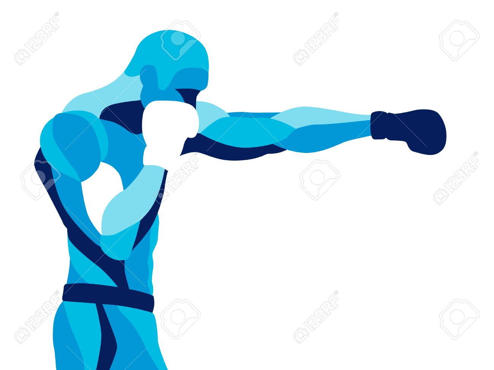
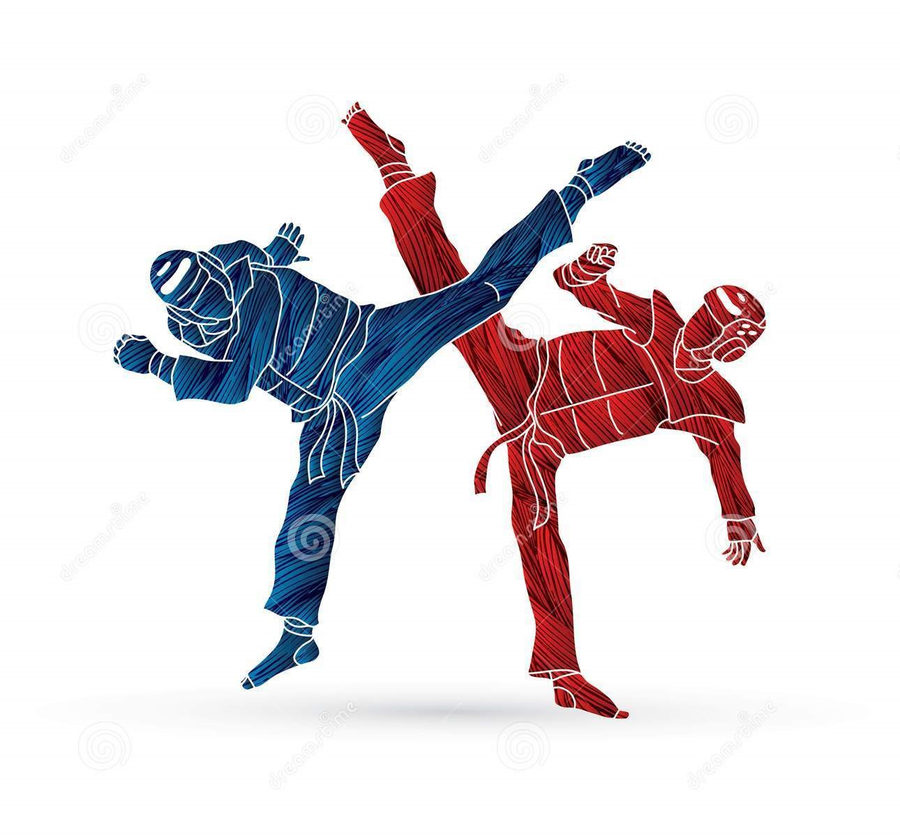
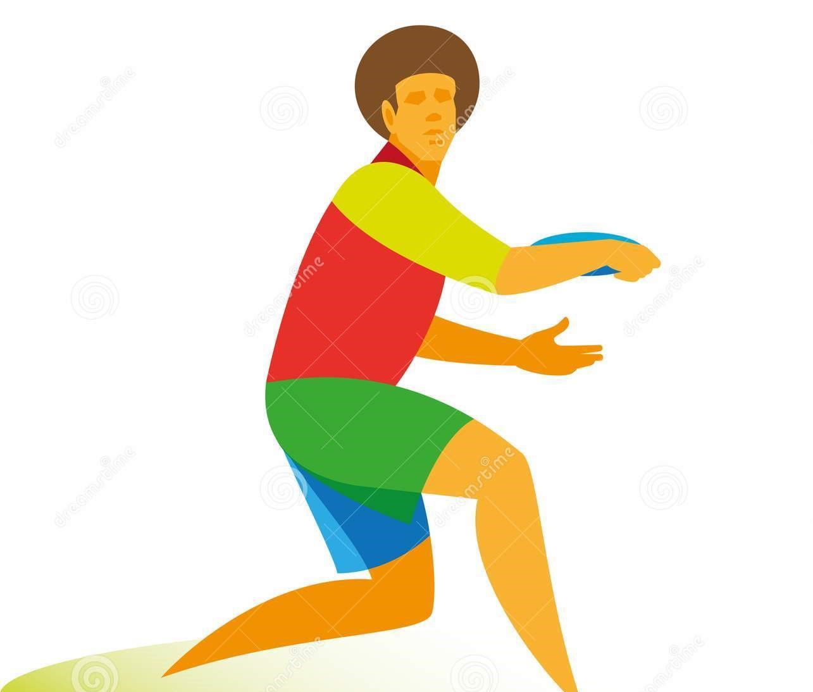

Los deportes más populares en el mundo
El deporte es la práctica de un ejercicio físico
regulado y competitivo. El deporte puede ser
recreativo profesional o como una forma de mejorar
la salud. El deporte al abarcar varias áreas de
nuestra sociedad conlleva una complejidad simbólica en
su dimensión social y cultural ya que actualmente el
deporte es sinónimo de juego, gimnástica, ejercicio
físico, recreación y ocio.
Clasificación de los deportes
La clasificación de los deportes ha sido objeto de una
amplia bibliografía, entere otros muchos, hemos
consultado la Clasificación de Bounet
(1968) en la que se ponen de maniesfiesto
ciertos aspectos diferenciales entre los diferentes
deportes.
- DEPORTES DE COMBATE: Son deportes
de combate competitivo donde dos combatientes pelean
uno contra otro limitado por reglas de
enfrentamiento, por lo general con equipo protector,
el objetivo es simular el combate real con enfoque
deportivo.Las federaciones y organizaciones son
quienes regulan los deportes de combate determinando
las reglas y el equipo protector que se usan en las competencias,
donde la meta es ganar trofeos, medallas, cinturones y títulos de
campeón.Las competencias pueden ser de
contacto ligero, medio y total (full contact).
Las reglas solamente restringen al practicante a un
dominio que puede ser: golpes y/o patadas, lucha o
agarre y uso de armas.
Por ejemplo:
- Boxeo

- Esgrima
- MMA
- Taekwondo

- Judo
- DEPORTES DE PELOTA: es un juego
o deporte en el cual su elemento esencial es una
pelota.
Hay muchos juegos populares y deportes que
impliquen algún tipo de pelota o similar objeto.
Estos juegos se pueden agrupar por
el objetivo general del juego, a veces indicando
un origen común, ya sea de un juego en sí o de su
idea básica.
Por ejemplo:
- Futbol Americano
- Polo
- Baloncesto
- Tenis
- Volleyball
- DEPORTES ATLÉTICOS: es un deporte
de competición que abarca un gran número de pruebas
que pueden tener lugar en pista cubierta o al aire
libre.
Por ejemplo:
- Maratón
- Natación
- Salto de longitud
- Lanzamiento de disco

- Lanzamiento de Jabalina
- DEPORTES EN LA NATURALEZA: el
deporte de aventura es una nueva forma deportiva
que, en equipo, pone al hombre en contacto con la
naturaleza.
Por ejemplo:
- Escalada

- Mountain bike
- Ciclismo
DEPORTES MECÁNICOS:
son aquellos
que surgen del empleo deportivo de diversos
ingenios técnicos.
Por ejemplo:
- Ciclismo
- Automovilismo
- Motociclismo